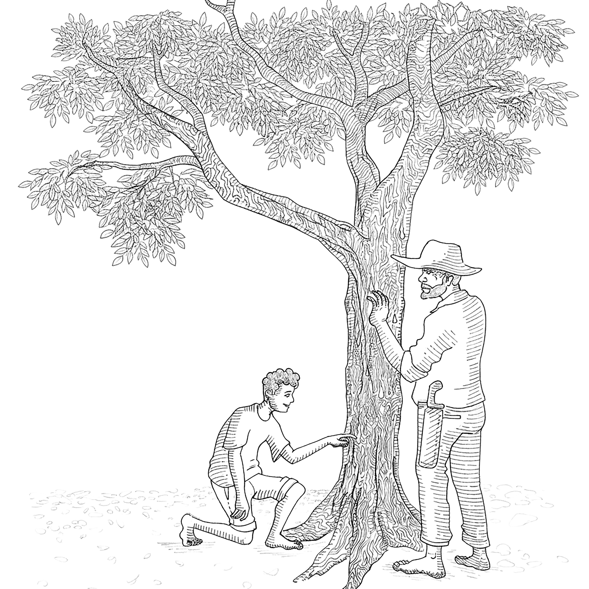

Rita entrou na sala de aula mais cedo do que de costume. Ela precisava pôr em dia os lançamentos de notas e frequências em sua planilha. Momentos após o toque da sirene, a sala já estava tomada pelos estudantes.
— Bom dia, pessoal! Espero que tenham descansado durante o feriado, pois teremos uma semana repleta de atividades muito interessantes.
— Professora Rita? — interrompeu a aluna Amanda. — A senhora vai recolher aquela atividade sobre a migração do peixe, da aula passada?
— Ouviu isso, Koz? Ela está falando de mim! — ironizou Anagonno.
— Por favor, Anagonno, não distraia a minha atenção. Você está em minha mente para me auxiliar... ou já se esqueceu do nosso trato?
— Queira me desculpar, senhor Koz. Não resisti no momento em que ela se referiu à migração do peixe. Achei tão fofo da parte dela...
— Não, Amanda. Não vou recolher. Inclusive — continuou Rita — acho que devo desculpas a vocês, pois fiz uma tremenda confusão na hora em que fui separar o material.
— Então, não vamos mais ter uma aula sobre migração de peixes? — insistiu Amanda.
— Sim! Teremos. Mas sob um enfoque diferente — tentou consertar Rita. — Agora, vamos entrar numa matéria muito interessante. Tem a ver com o tempo, com o clima e com a própria sobrevivência da nossa espécie.
— Mas, antes de entrarmos no conteúdo, gostaria que alguém de vocês se dispusesse a criar uma frase envolvendo essas duas palavrinhas: tempo e clima. Quem se oferece?
— Eu, professora — se prontificou Glaydson, um dos alunos do fundão.
— Muito bem, Glaydson. Então diga a sua frase pra gente entrar no conteúdo da aula de hoje.
— Lá vai, professora: fiquei pouco tempo na festa da Juliana, pois senti que o clima lá não estava bom.
— Glaydson, apesar da ironia, sua frase foi criativa, pois usou a palavra tempo para indicar a duração dos acontecimentos, e a palavra clima no sentido figurado, ou seja, para informar o estado de ânimo entre as pessoas da festa. Contudo — continuou Rita —, nossa ideia hoje é discutir essas duas palavras no âmbito da Ciência da Natureza.
— Alguém mais gostaria de oferecer outra frase?
— “Clima e previsão do tempo para todo o país” — disse uma aluna.
— Muito bem, Clarice! Você pegou a ideia. Mas, espera aí... de onde você tirou essa frase?
— Tirei da internet, professora.
— Logo eu percebi... Mas tudo bem. O importante é que essa frase é perfeita para entrarmos na nossa discussão de hoje.
p. 32— Pois bem, você disse “clima e previsão do tempo para todo o país”. Beleza. Então, prestem atenção, aí vai a pergunta de ouro: qual é a diferença entre clima e tempo? — lançou Rita.
Ninguém respondeu.
— Escutem bem: para o senso comum, essas duas palavras podem ser usadas para informar uma mesma situação. Por exemplo: você pode dizer que o tempo está quente e chuvoso, ou que o clima está quente e chuvoso; a ideia transmitida é praticamente a mesma.
— Porém, quando o assunto é tratado de forma científica, essas duas palavrinhas tornam-se muito diferentes, tanto no significado quanto na aplicação.
— Todos nós aqui — prosseguiu Rita — estamos muito acostumados a assistir, pela televisão, rádio ou internet, a programas especializados em fornecer a previsão do tempo e do clima, não é mesmo?
— Mas quem são os profissionais que estudam esses fenômenos? Que nomes são dados a essas áreas do conhecimento? Quais são os dados e os instrumentos que esses profissionais utilizam para fazer suas previsões?
— E, mais importante: qual é a relevância dessas previsões para o desenvolvimento e a sobrevivência da nossa espécie neste planeta?
— Todas essas questões serão discutidas na nossa aula de hoje. Legal, né?
Rita, então, discorreu exaustivamente sobre o tema, explicando a profissão de meteorologista, os cursos de Ciências Meteorológicas e como esses profissionais preveem os fenômenos climáticos com base em dados atmosféricos e no uso de equipamentos como o anemômetro, o barômetro e o termógrafo. Também destacou as relações entre as Ciências Meteorológicas e outras áreas do conhecimento, como a Geografia e a Astronomia — sobretudo a importância dos fenômenos astronômicos na determinação e modulação do clima terrestre.
Explicou a diferença entre tempo e clima, apontando que o primeiro se refere às condições atmosféricas momentâneas, enquanto o segundo trata de padrões que revelam um panorama mais prolongado dos fenômenos climáticos.
Por fim, Rita falou sobre a importância das Ciências Meteorológicas para a produção de alimentos e a prevenção de riscos.
p. 33— Então, pessoal, viram só como é interessante o campo das Ciências Meteorológicas? Agora, quero que reflitam sobre a seguinte situação e me respondam:
— Imaginem se todos os observatórios meteorológicos do mundo resolvessem, de uma hora para outra, parar de operar... Quais setores seriam os mais afetados — e por quê? — instigou Rita.
— Professora? — chamou um aluno, levantando a mão.
— Sim, Matheus, pode falar. Contanto que seja sobre o assunto que estamos tratando.
— É sim. É que eu tenho um avô que mora no Pará. Ele entende tudo sobre o tempo, sabe dizer quando vai chover, se a chuva vai ser forte ou fraca... todas essas coisas.
— Que legal, Matheus! Seu avô é meteorologista?
— Não, professora! Ele mal sabe ler e escrever.
— Ah, sei... Então seu avô é uma dessas pessoas que está sempre atenta às previsões do tempo oferecidas pelos serviços de meteorologia, não é isso?
— Nada disso, professora. Meu avô sabe dessas coisas do clima por ele mesmo.
— Que interessante! Seu avô parece ser uma pessoa muito especial. Você poderia nos contar como ele faz essas previsões climáticas? — provocou Rita.
— Vou tentar, professora. Dois anos atrás, fomos passar o Natal com os meus avós, lá no Pará. Eles moram num pequeno sítio, bem no pé de uma serra. Acho que nunca saíram de lá pra nada. Meu avô sempre sustentou a família plantando roça. Meu pai conta que ele e todos os irmãos e irmãs ajudavam meu avô no roçado.
— No dia em que chegamos ao sítio, meu avô chamou a gente para ver a roça dele. Era uma roça bem pequena, acho que do tamanho do campo de futebol aqui da escola. Meu pai, então, perguntou pro meu avô se ele estava plantando pouco por causa da saúde ou por falta de dinheiro para comprar adubo e sementes. Ele respondeu que não, disse que o "problema estava lá em cima", e apontou pro céu. Achei aquilo engraçado.
Depois, ele segurou a minha mão e me fez atravessar uma cerca de arame. Andamos alguns metros do lado de lá da cerca, onde começava o cerrado. Meu avô apontou o dedo na direção de uma árvore e me perguntou:
— “Tá vendo aquele jatobazeiro? Tá vendo que ele tá cheio de moradas de João-de-Barro ainda em construção?”
Respondi que sim, mas perguntei o que havia de errado com elas. Ele explicou que estava acontecendo uma confusão danada: algumas moradas estavam com a porta virada para um lado, outras pro lado contrário, e que esse desacerto estava acontecendo até entre moradas no mesmo galho! Achei aquilo muito esquisito.
p. 34Andamos mais um pouco e, me puxando pelo braço, ele me mostrou outra árvore:
— “Tá vendo ali, meu neto, como esse pé de jacarandá tá chorando?”

— Chorando?! — perguntei, fazendo uma piada, ao meu avô se alguém tinha deixado o jacarandá triste.
Ele sorriu e me explicou que o jacarandá "chora" quando começa a sair muita resina do tronco. Depois, apontou para o céu e foi me mostrando como o centro e as bordas de algumas nuvens estavam com tons diferentes de cinza. Eu achei tudo muito estranho.
No caminho de volta, ele me perguntou:
— “Viu agora por que só vou plantar aquele pedacinho de roça?”
Respondi que não estava entendendo nada do que ele tava falando. Ele riu muito da minha resposta e me explicou que todas aquelas "esquisitices" da natureza eram sinais de que aquele ano seria de clima desregulado: pouca chuva, ventos fortes e tempestades.
Depois, ele ainda disse uma coisa que nunca esqueci: que “os bichos do mato, as árvores e as nuvens sempre avisam pra ele o que vai acontecer no mundo”.
Por isso é que eu falei que o meu avô sabe sobre o clima.
— Parabéns, Matheus! Adorei ouvir você falar do seu avô. Não foi bacana, pessoal? Olhem só, temos um contador de causos na turma e nem sabíamos! Vamos dar uma salva de palmas para o Matheus!
Imediatamente após as palmas, Rita pediu silêncio e retomou a discussão:
— Pessoal, atenção! Vamos refletir sobre a história que o Matheus acabou de nos contar, sobre como o avô dele faz previsões do clima para tomar decisões sobre o tamanho da roça.
— Vocês acham que o avô do Matheus está certo ou errado em suas previsões?
Muitos responderam que sim, a maioria respondeu que não.
— Prestem atenção — retomou Rita. — Aqueles que responderam “sim” estão certos, e aqueles que responderam “não” também estão certos.
p. 35— Como assim, professora? — perguntou uma aluna.
— Primeiro, vou explicar o caso daqueles que responderam “sim”. Pois bem, o avô do Matheus faz suas previsões climáticas com base nos saberes tradicionais locais. Esses saberes são muito importantes, pois fazem parte do nosso patrimônio cultural.
— Como vocês sabem, nosso país é culturalmente muito diverso, e proteger essa diversidade é um dever de todos. Em todas as culturas tradicionais, encontraremos pessoas com grande conhecimento local. Algumas delas, como o avô do Matheus, se ocupam da agricultura e, por isso, precisam desenvolver conhecimentos sobre o clima.
— Outros se dedicam à saúde, como os curandeiros, raizeiros, benzedeiras, pajés e xamãs, no caso dos povos indígenas. Esses precisam desenvolver um grande conhecimento sobre a flora e a fauna locais.
— E a coisa não para por aí. Podemos citar ainda os artesãos e artesãs, os pescadores, caçadores, foliões... e assim por diante. Cada um deles carrega um patrimônio cultural importantíssimo para entendermos a formação do nosso país.
— Portanto, do ponto de vista da cultura tradicional, o avô do Matheus está certo.
— Agora — prosseguiu Rita —, para o caso daqueles que responderam “não”, será preciso voltarmos ao ponto em que pedi que refletissem sobre quais setores da sociedade seriam mais afetados caso os serviços meteorológicos parassem, de uma hora para outra.
— Alguém aqui já pensou sobre isso?
— Eu, professora! — se apresentou um aluno.
— Pode responder, Jhonatan.
— Eu penso assim: o nosso planeta está superpovoado, certo? Todo mundo precisa se alimentar e se deslocar de um lugar para o outro. Então, se os serviços de meteorologia pararem, toda a população do planeta passará a correr sérios riscos de vida.
— Estou gostando da sua resposta, Jhonatan. Mas você poderia ser mais específico?
p. 36— Sim, professora. Para produzir alimentos em grandes quantidades e transportá-los para todos os cantos do mundo, seja de caminhão, navio ou avião, as pessoas precisam ter informações exatas sobre o clima. Caso contrário, podem perder suas lavouras e ter muito prejuízo durante o transporte.
— No caso dos pilotos de avião, eles precisam saber das condições meteorológicas dos aeroportos para fazerem um pouso seguro, não é mesmo? — concluiu Jhonatan.
— Muito bem, Jhonatan! Estou amando vocês hoje.
— A civilização humana — prosseguiu Rita — se encontra em um estado muito avançado de desenvolvimento. Isso implica atender a demandas em tempo real e em escala global. Todos os setores da sociedade mundial estão interligados.
— A menor falha em um setor qualquer pode afetar todo o restante. Por essa razão, é imprescindível que todos os países do mundo invistam em ciência e tecnologia.
— E nossa ciência, a ciência ocidental , por meio de sua compreensão racional e objetiva do mundo, é capaz de prever fenômenos naturais e antecipar ações estratégicas para a redução de riscos.
— Vinte e quatro horas por dia, dezenas de satélites meteorológicos orbitam a Terra monitorando o clima e prevendo o tempo em nosso planeta.
— Além deles, também há os balões meteorológicos de grande altitude, encarregados de nos informar sobre as condições atmosféricas, como umidade, pressão e velocidade do vento.
— Graças a toda essa tecnologia, somos capazes de saber, com antecedência, onde vão ocorrer eventos climáticos extremos, como furacões e tornados.
— Professora? — interrompeu a aluna Amanda. — Então, os saberes tradicionais, como os do avô do Matheus, podem ser considerados inúteis hoje em dia?
p. 37— Boa pergunta, Amanda! Acho que “inútil” não seria o termo mais adequado. Como eu disse anteriormente, os conhecimentos tradicionais fazem parte do nosso patrimônio cultural.
— Podemos dizer que são saberes do tipo pré-científico. Em uma época pré-moderna, eram esses conhecimentos, transmitidos de geração em geração, que forneciam respostas para todos os tipos de questionamentos e ofereciam a tecnologia usada na construção de abrigos, na produção de alimentos, na navegação e até na fabricação de armas.
— Com o tempo, com a chegada da modernidade, a ciência deu um grande salto. Deixou de ser local e vinculada a cosmovisões e crenças, passando a se tornar um esforço intelectual racional, objetivo e universal — concluiu Rita.
— Atenção, pessoal! Faltam cinco minutos para o fim da aula. Por favor, façam silêncio para a chamada.
— Viu só, Sr. Koz? Sua professora acabou de mandar um inocente para a masmorra — disse Anagonno.
— Não entendi. Poderia ser mais específico?
— Perdão, me esqueci de que o amigo é um recém-chegado e ainda não está familiarizado com o uso de metáforas. Eu quis dizer que a sua professorinha “do coração” acaba de condenar os conhecimentos tradicionais à pena de morte ou, como dizia o historiador e médico croata Mirko D. Grmek, ao memoricídio .
— Primeiramente, a professora Rita não tem nenhuma ligação com o meu coração. Minha raça não desenvolve laços afetivos com outras raças intergalácticas. Em segundo lugar, não vi a professora proferir qualquer tipo de sentença. Tudo o que presenciei foi uma aula bastante instrutiva sobre o papel das ciências meteorológicas, que, inclusive, despertou o interesse dos estudantes presentes.
— Pois eu vi além do que o amigo conseguiu ver. Vi um tipo de conhecimento, a ciência ocidental, ser colocado numa posição de superioridade em relação aos saberes tradicionais. Um verdadeiro exercício de dominação e subordinação. Com certeza, o aluno Matheus saiu daquela aula comparando o avô a um homem das cavernas.
p. 38— Queira me perdoar, Sr. Anagonno, mas não consigo imaginar grandes aeroportos internacionais empregando os conhecimentos meteorológicos do avô do aluno Matheus.
— Se o amigo estivesse há mais tempo neste planeta, eu diria que está sendo irônico. Estou tentando dizer que é um grande erro comparar esses dois tipos de conhecimento tomando como medida o grau de acerto ou erro de um em relação ao outro.
— Se a educação continuar persistindo nesse erro, bilhões de pessoas, não cientistas, se sentirão compelidas a interromper suas práticas de produção e reprodução de saberes tradicionais locais. Isso resultaria em um tipo de simplificação fatal.
— Mas o que há de errado em a raça humana escolher a melhor forma de conhecimento? — repliquei.
— Amigo Koz, o que está em jogo aqui não é descobrir qual das formas de conhecimento humano é a melhor. A questão central é entender que tipo de relação os seres humanos estabelecem com o planeta Terra ao buscarem seus conhecimentos — independentemente de serem cientistas ou não.
— Isso que acabou de me dizer, amigo anfíbio, despertou a minha curiosidade...